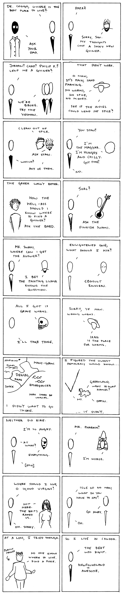

. . .
. . .
 . . . 061 . . .
. . . 061 . . .
 . . .
. . .

Countries
8.6.2008
-----
...Well, this was the longest bad joke I could fit into twenty panels. Here are the references: 1. DR Congo. 2. Papua New Guinea. 3. Jordan, Chad, Philippines. 4. Yeman, Oman, Spain 5. India. 6. The -istan countries, Hungary, chile 7. Hellas, Greece. 8. Svalbard. 9. Suomi, Finland. 10. Tibet, the Dalai Llama. 11. France (The Enlightenment). 12. Yemen, Arrakis, from Frank Herbert's Dune. 13. Iraq, United States, Germany, Wales, various puns. 14. Iceland, Greenland. 15. Ireland, James Joyce. 16. Faroe Islands. 17. British Virgin Islands. 18. Haiti, Port-au-Prince. 19. Isle of Man, "No man is an island." 20. Newfoundland, Kate Beaton...
© 2008 Richard L.